Visualizing sdmTMB conditional effects using visreg
Julia Indivero, Sean Anderson, Lewis Barnett, Philina English, Eric Ward
2022-10-18
Source:vignettes/visreg.Rmd
visreg.RmdIf the code in this vignette has not been evaluated, a rendered version is available on the documentation site under ‘Articles’.
We can use the visreg package to visually inspect the conditional effects of explanatory variables in sdmTMB models.
We will use the built-in Pacific cod survey data for this example. We will fit a model with scaled depth and a factor effect of year using a Tweedie distribution.
pcod_2011$fyear <- as.factor(pcod_2011$year)
mesh <- make_mesh(pcod_2011, c("X", "Y"), cutoff = 20)
fit <- sdmTMB(
density ~ 0 + s(depth_scaled) + fyear,
data = pcod_2011,
mesh = mesh,
spatial = "off", # off for vignette building speed
family = tweedie(link = "log")
)We can then plot the effect of depth in link space. This shows the value of depth on the x-axis and the change in response on the y-axis, holding all other variables constant.
visreg(fit, xvar = "depth_scaled")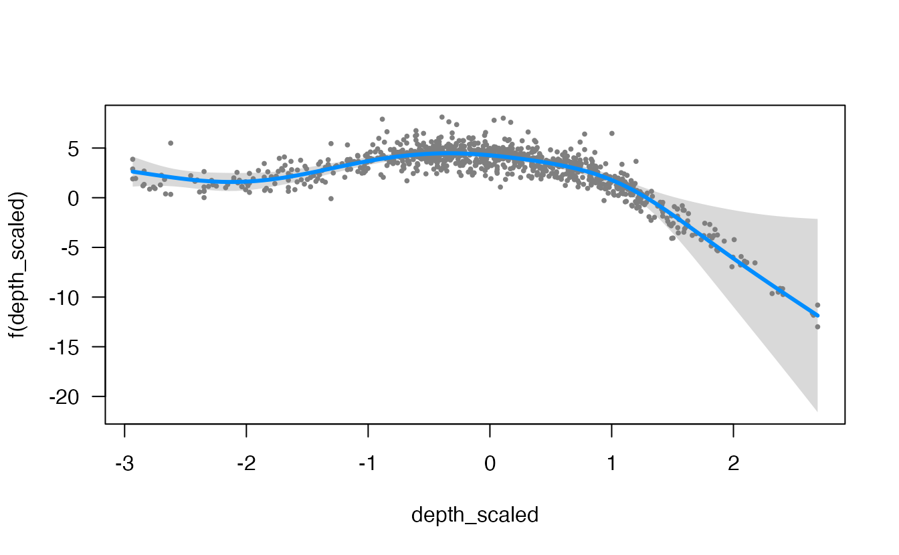
Note that by default, randomized quantile residuals are included. These should be normally distributed in link space if the model is consistent with the data. These can be turned off with partial = FALSE
The default, a visreg plot uses base graphics. We can set gg = TRUE to get a ggplot version:
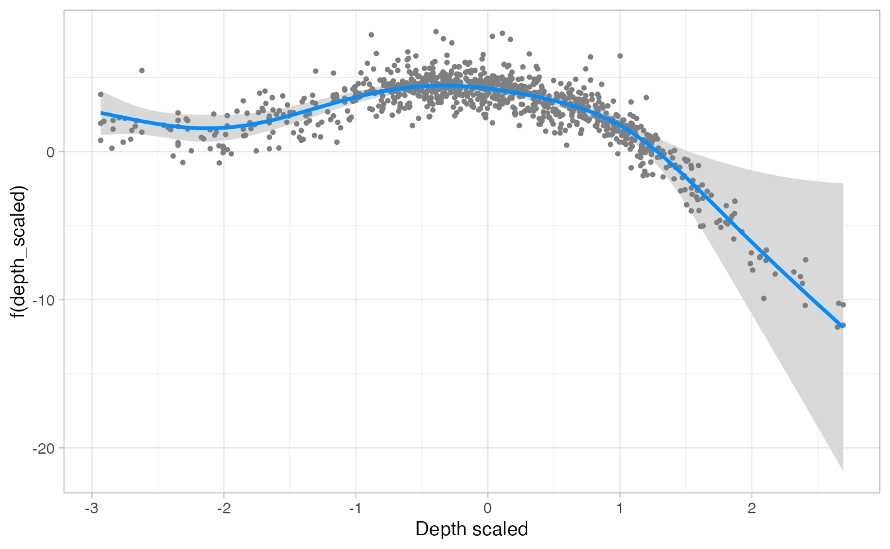
We can also grab the underlying data it creates and make our own plot:
d <- visreg(fit, xvar = "depth_scaled", plot = FALSE)
head(d$fit)
#> depth_scaled fyear density visregFit visregLwr visregUpr
#> 1 -2.933490 2011 0 2.629109 1.122037 4.136180
#> 2 -2.877239 2011 0 2.524428 1.158454 3.890403
#> 3 -2.820988 2011 0 2.420117 1.185479 3.654754
#> 4 -2.764737 2011 0 2.316777 1.200200 3.433353
#> 5 -2.708486 2011 0 2.215281 1.199393 3.231169
#> 6 -2.652235 2011 0 2.116732 1.180156 3.053308
g <- ggplot(d$fit, aes(x = depth_scaled, y = visregFit)) +
geom_line() +
geom_ribbon(aes(ymin = visregLwr, ymax = visregUpr), alpha = 0.5)
# residuals are in d$res
head(d$res)
#> depth_scaled fyear density visregRes visregPos
#> 1 0.7408840 2011 0 5.598588 TRUE
#> 2 -2.7062455 2011 0 1.929910 FALSE
#> 3 -2.9334899 2011 0 1.758294 FALSE
#> 4 -0.2224156 2011 0 3.533598 FALSE
#> 5 1.8685071 2011 0 -3.572073 TRUE
#> 6 2.3175211 2011 0 -10.493536 FALSE
g + geom_point(aes(y = visregRes), data = d$res, size = 1, alpha = 0.4)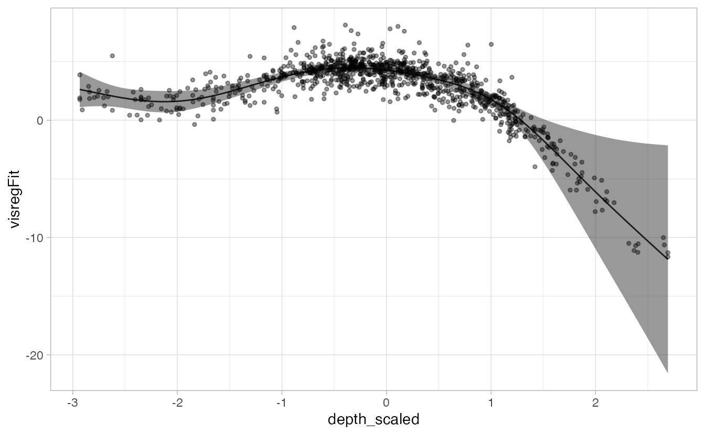
We can look at the effect of depth in each year separately, either in separate plots or overlaid on the same plot.
visreg(fit, xvar = "depth_scaled", by = "fyear", gg = TRUE)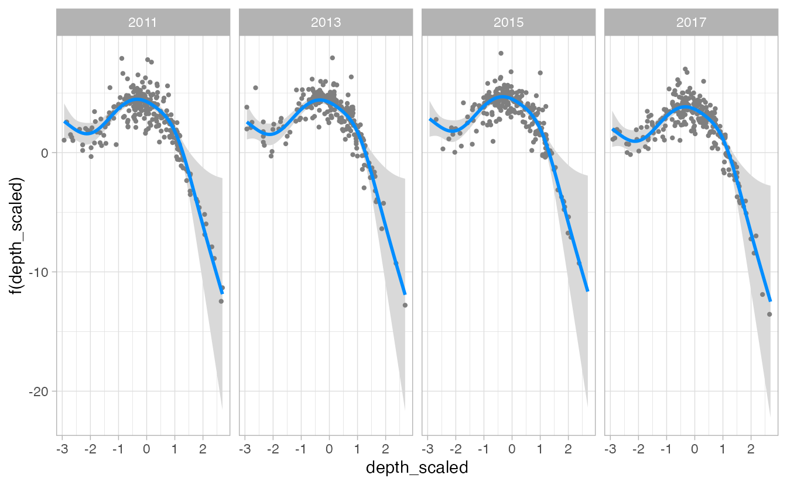
visreg(fit, xvar = "depth_scaled", by = "fyear", overlay = TRUE, gg = TRUE)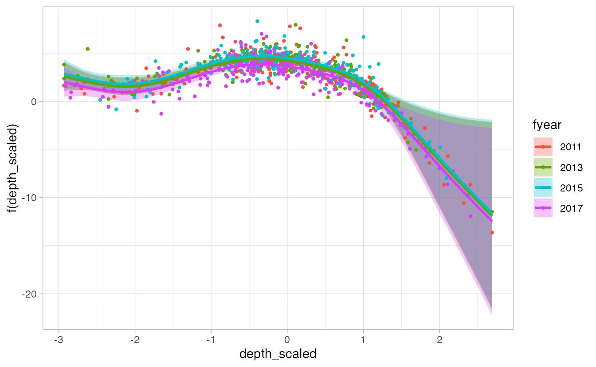
And at the effect of depth on the response scale, rather than link (log) scale.
visreg(fit, xvar = "depth_scaled", scale = "response")
In this case, visreg adds “rug” lines indicating the where the data were observed along the x-axis variable.
visreg() can also be used to visualize just the categorical effect of year.
visreg(fit, xvar = "fyear")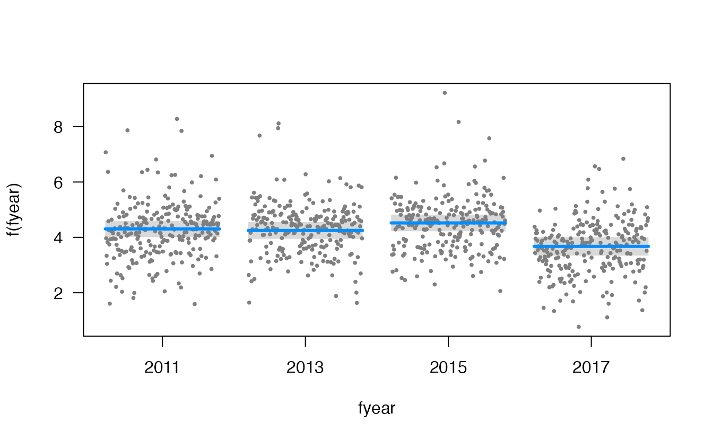
We can also simultaneously compare both depth and year with a two-dimensional contour plot.
visreg2d(fit, xvar = "fyear", yvar = "depth_scaled")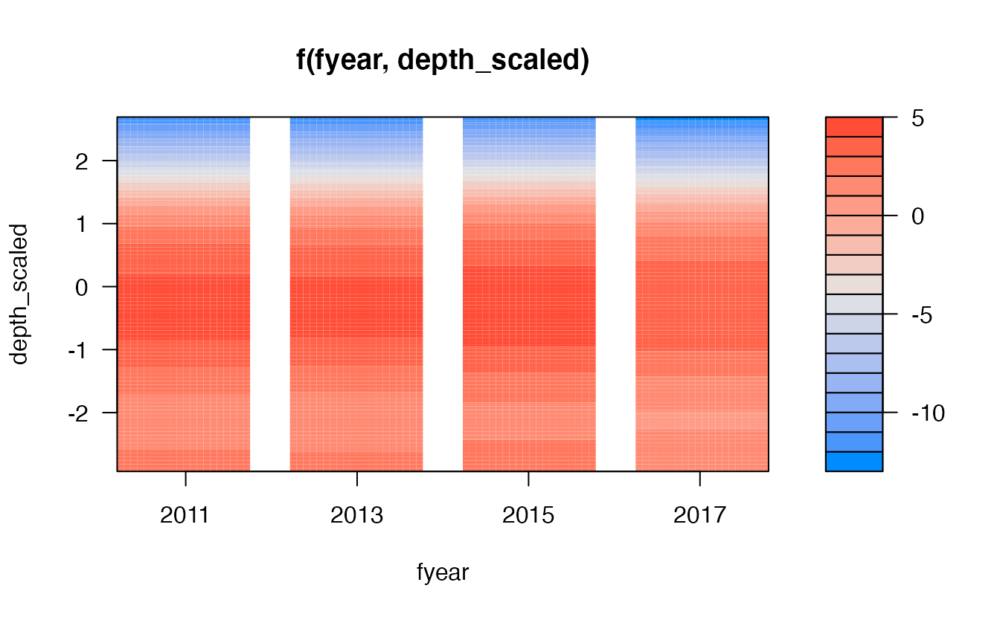
visreg2d() is different from visreg() in that it doesn’t take a gg argument. Instead, it takes plot.type = c("image", "persp", "rgl", "gg"). For example:
visreg2d(fit, xvar = "fyear", yvar = "depth_scaled", plot.type = "gg")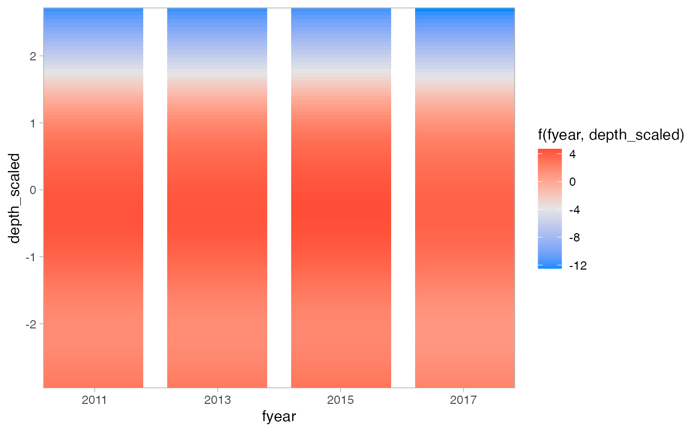
visreg2d(fit, xvar = "fyear", yvar = "depth_scaled", plot.type = "persp")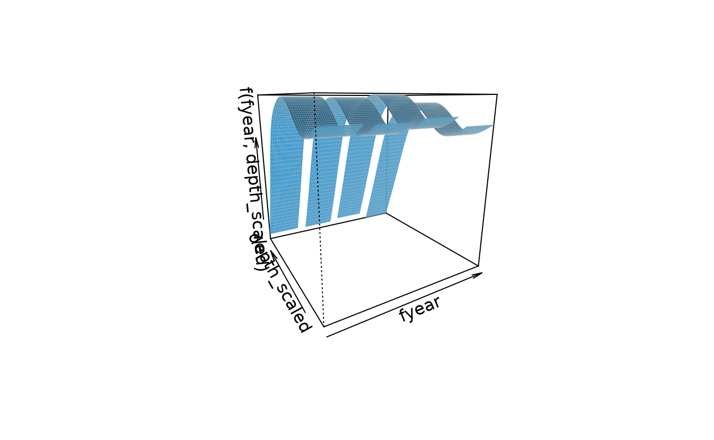
Delta models
visreg() can also be used to plot the output of delta models from sdmTMB() by using similar code for the previous plots, but using the sdmTMB wrapper function visreg_delta() and specifying model = 1 for the encounter (0 vs. non-zero) model or model = 2 for the positive component model (e.g., Gamma, lognormal). For example:
fit_dg <- sdmTMB(
density ~ s(depth_scaled, year, k = 8),
data = pcod_2011,
mesh = pcod_mesh_2011,
spatial = "off", # for vignette speed
family = delta_gamma()
)
visreg_delta(fit_dg, xvar = "depth_scaled", model = 1, gg = TRUE)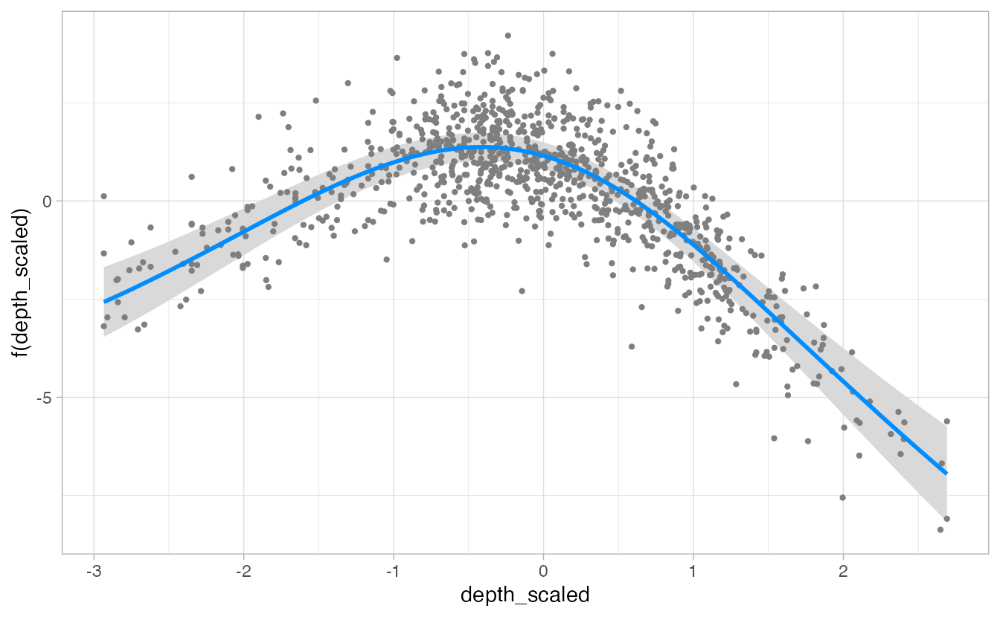
visreg_delta(fit_dg, xvar = "depth_scaled", model = 2, gg = TRUE)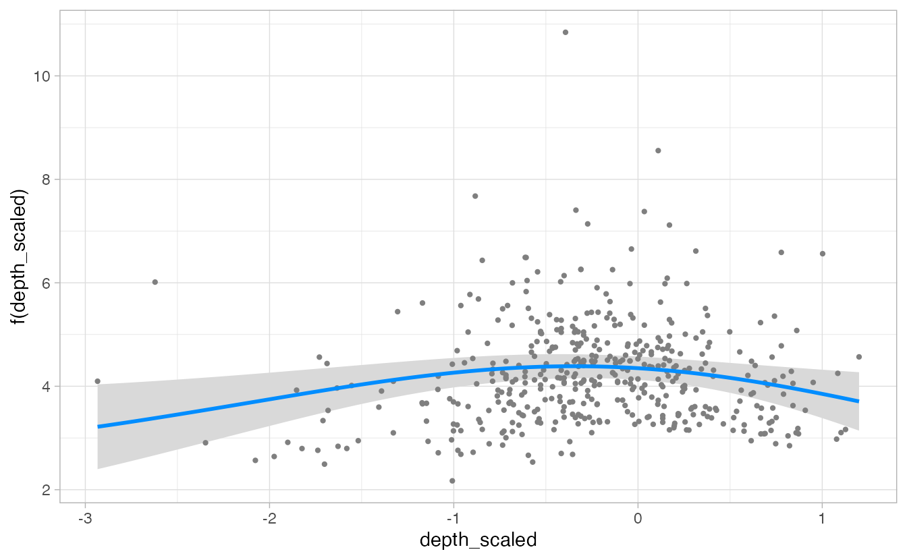
Note that for plotting with visreg_delta(), categorical variables like year need to be designated as a factor in the data frame, as in the example above with fyear, rather than in the model formula (e.g., + as.factor(year)).